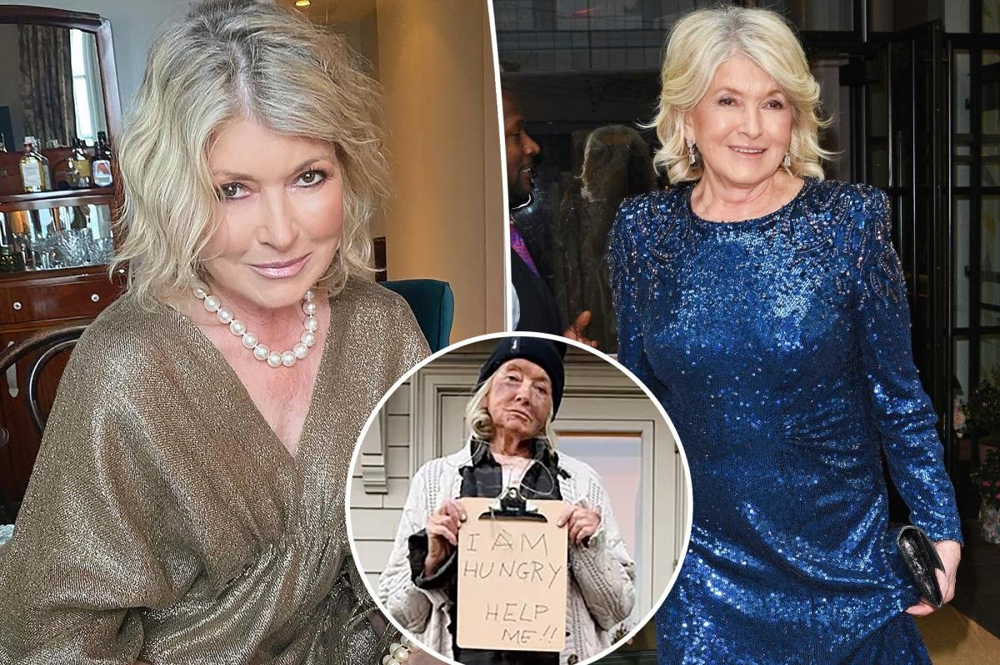
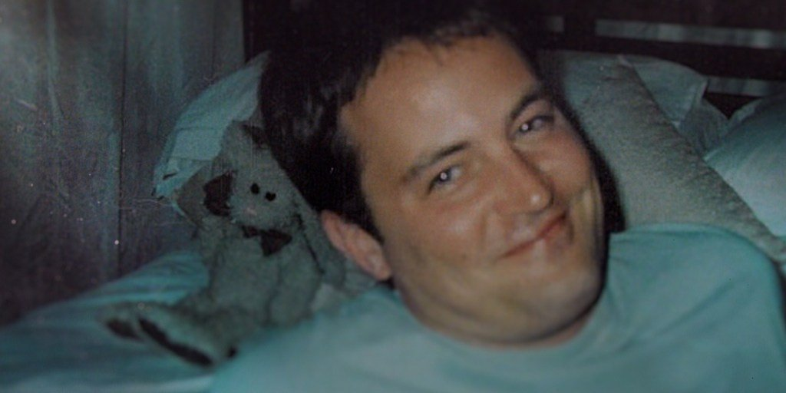
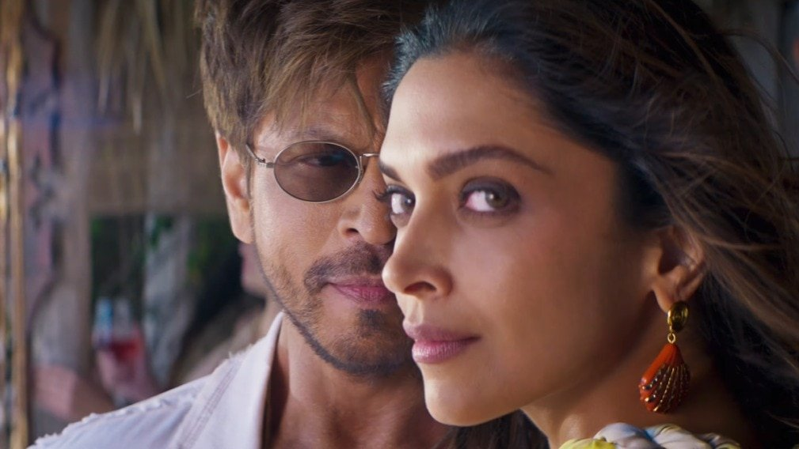

|
Monday · November 2, 2026
Pop Culture Digest
What’s actually dominating today
|
| Twenty years later, The Black Parade finally hits No. 1. Martha Stewart is on her second apology for a Halloween costume that went very wrong, Netflix viewers are choosing a quiet Matthew Perry documentary over everything else, and Shah Rukh Khan marked his 61st birthday with a King song featuring Ed Sheeran. |
|
Music
My Chemical Romance gets its first-ever No. 1, 20 years after The Black Parade |
The 20th anniversary deluxe reissue of The Black Parade jumped from No. 139 to the top of the Billboard 200 with 78,000 equivalent album units, knocking Olivia Rodrigo’s You Seem Pretty Sad for a Girl So in Love down to No. 2. The album originally peaked at No. 2 in 2006, and until now that was the band’s best chart showing. It’s the longest wait ever for an album to return to No. 1, beating the nearly 16 years it took Toby Keith’s 35 Biggest Hits after his death in 2024, and the first anniversary edition ever to debut at No. 1. The band marked the milestone with five nights at the Hollywood Bowl playing the rock opera in full. |
|
Celebrity
Martha Stewart’s homeless Halloween costume backfires, and her apologies aren’t helping |
|
 |
Stewart dressed as an unhoused person for Halloween, with ripped clothes, dirt on her face and a cardboard sign reading “I am hungry, help me.” She deleted the photos, and her first statement claimed the look was meant to “bring more awareness to the very serious subject of homelessness.” She then deleted that too. On Sunday she posted a second apology on Instagram calling the costume “insensitive and not funny” and saying her earlier statement “didn’t go far enough.” Her comments are still flooded with criticism, including a scathing note from Pose star Indya Moore. |
|
Streaming
The One About Matthew Perry is Netflix’s No. 1 show, without the Friends cast |
|
 |
The three-part documentary from Quiet on Set director Mary Robertson premiered October 27, a day before the third anniversary of Perry’s death, and has held the No. 1 spot on Netflix’s U.S. series chart since, ahead of The Fall of El Mayo and Nobody Wants This. His sister Caitlin Bowick anchors it, speaking on camera for the first time, along with best friend Roger Castillo and Kevin Pollak. The big talking point is who isn’t there: Aniston, Cox, Kudrow, LeBlanc and Schwimmer appear only in old footage. Robertson says they were asked and chose not to relive their grief on camera. Bowick recalls the five of them holding hands and crying at his casket. Critics are split between “intimate and sincere” and “little fans haven’t heard before.” |
|
Movies
Shah Rukh Khan turns 61 with a King song featuring Deepika Padukone and Ed Sheeran |
|
 |
At midnight on his birthday, Shah Rukh Khan dropped “Tu Mil Jaaye,” the first song from his action film King, reuniting him on screen with Deepika Padukone. The Sachin-Jigar track features Arijit Singh and Madhubanti Bagchi, plus an English verse from Ed Sheeran, and the video cuts between romance, dance and fight scenes. Khan also skipped his usual birthday balcony appearance for fans outside his Mumbai home, Mannat. King opens in theaters December 24. |
|
Tu Mil Jaaye video on YouTube → · India Today → · The Hindu → |
Bottom of the news
|